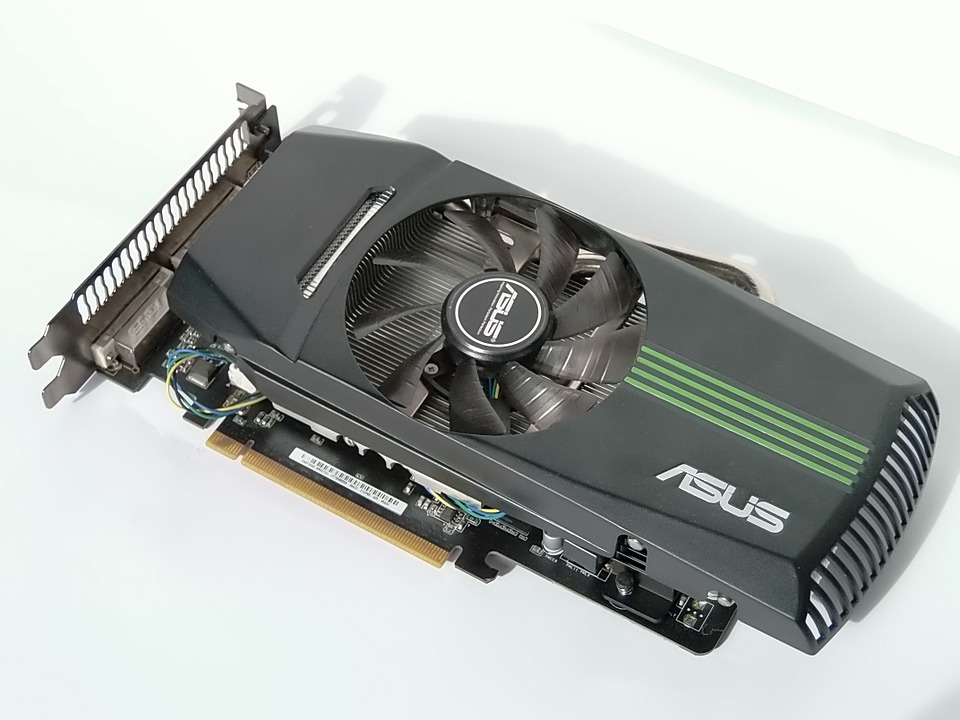

Grafikkort
Man skulle kunna kalla Grafikkortet datorns ögon.
Man hör nästan på namnet vad grafikkortets uppgift är men jag förklarar det ändå, grafikkortets uppgift är att hantera grafik, såsom spel eller redigering av kort och videos. Tro det eller ej men utan ett grafikkort skulle inte datorn ens klara av att visa en bild på skärmen, men idag finns det faktiskt datorer som kommer med inbyggd grafik i processorn som med hjälp av moderkortet klarar att hantera enklare grafiska data.Ska datorn användas till att spelas med kommer du inte undan med varken ett inbygg grafikfunktion i processorn eller ett billigt grafikkort utan då krävs ett större kraftpaket, alltså ett betydligt dyrare grafikkort.
Det finns en uppsjö grafikkort på marknaden och här är lite fakta som är viktigt att ha med sig innan man köper grafikkort.
Det finns mängder av olika grafikkort ute på marknaden och därför är det väldigt viktigt att du som konsument bestämmer dig vad du tänker utföra med din dator innan du köper ett för klent eller kraftfullt grafikkort.Det finns grafikkort som är små, går tyst, kall och är billiga i inköp men sen finns spel grafikkort. Dem är stora strömförbrukande kraftpaket som behöver ett stort
chassi med god kylning, alltså inget att sätta i i "tant Agdas" surfar dator.
Så om du ska spela och har en bra dator chassi snåla inte då och köp ett billig och dåligt grafikkort, köp ett kraftpaket. 